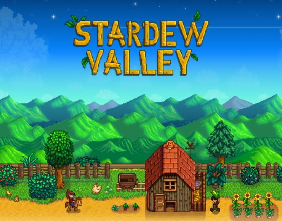

게임 바로가기 Stardew Valley는 'ConcernedApe'이라는 1인 개발자가 만든 게임입니다.
2016.02.27에 출시된 게임으로 롤 플레잉, 시뮬레이션 장르입니다.
[게임 줄거리]
조자 주식회사에서 고단한 회사 생활을 하던 주인공은 어느 날 어릴 적 할아버지가 삶이 힘들고 지칠 때 열어보라는 편지를 뜯어보게 된다. 편지에는 할아버지가 과거 살던 농장에서 새 삶을 시작하라는 내용이 적혀있었고,
주인공은 한적한 지역인 스타듀 밸리의 펠리컨 마을로 이사를 오게 된다.
게임 내 주된 컨텐츠는 6가지가 있다.
농사, 목축, 채광, 채집, 낚시, 번들(수집)의 컨텐츠를 즐기면서 마을 사람들과도 상호작용 하며 흘러가는 스토리를 보는 힐링하는 게임이다.